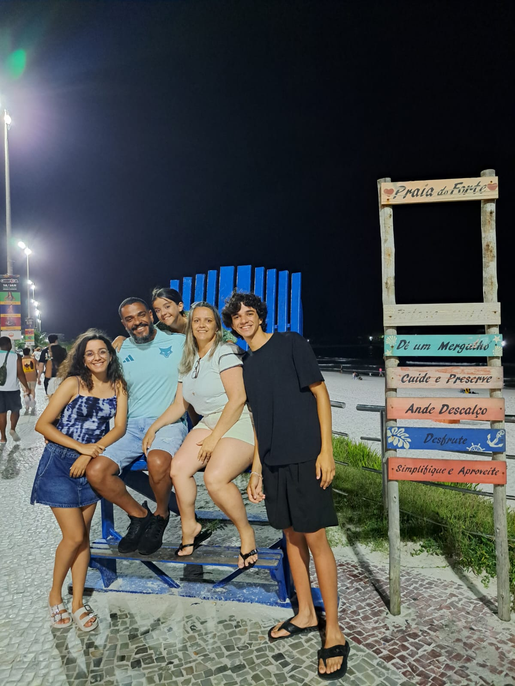
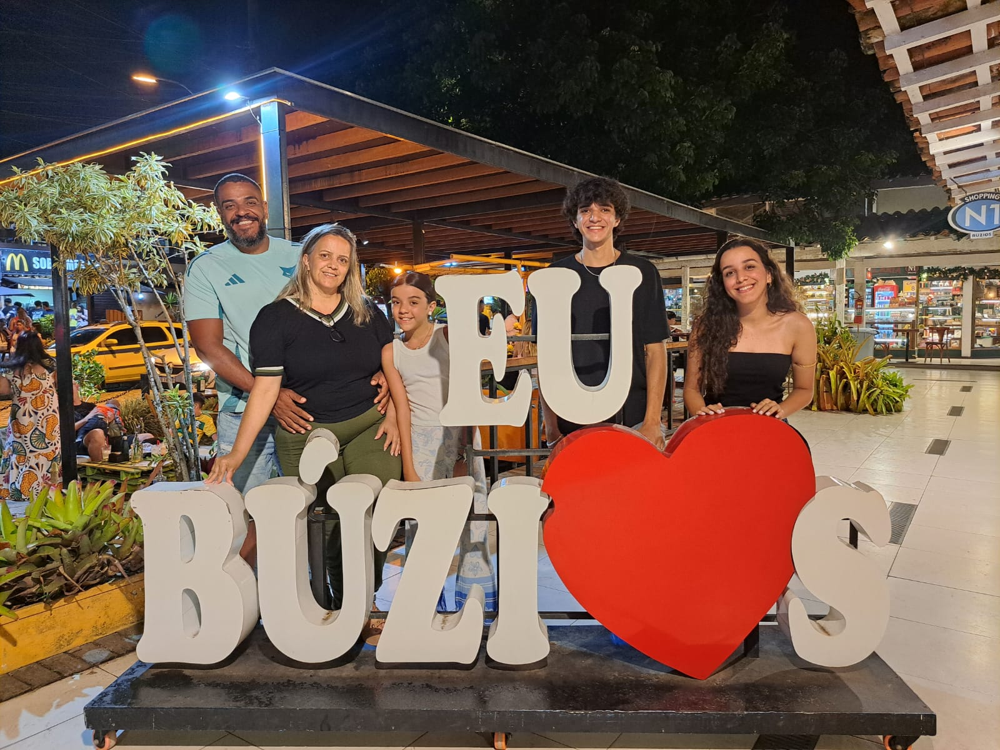
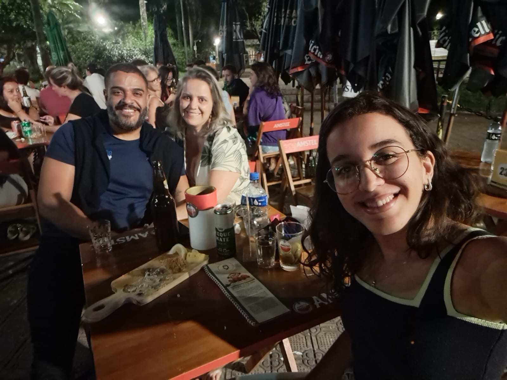
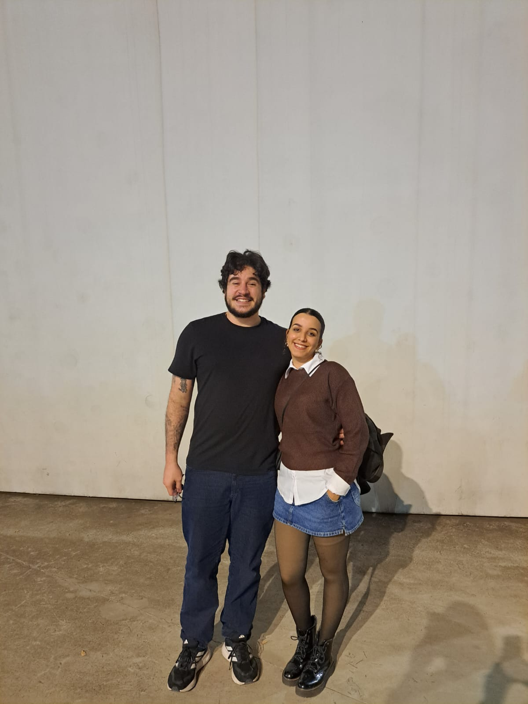
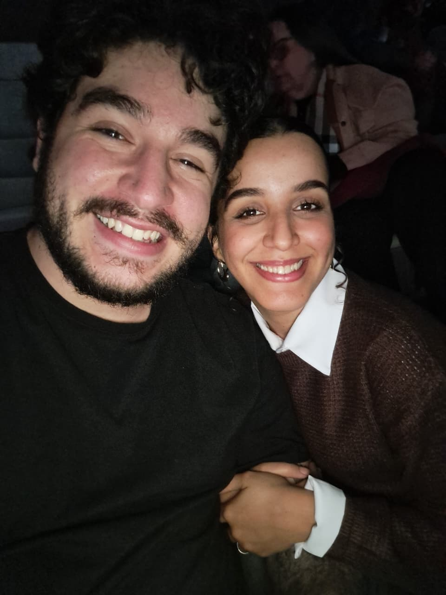
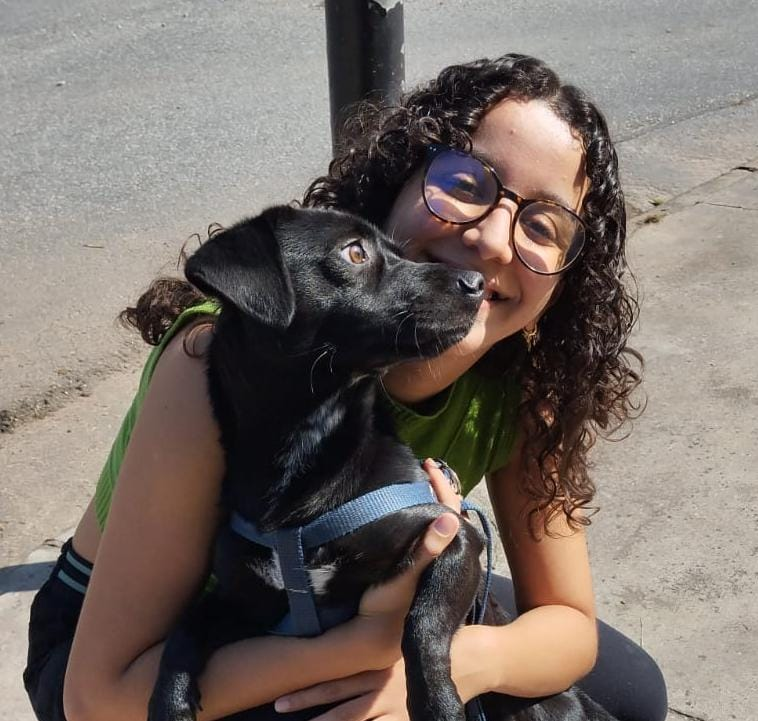
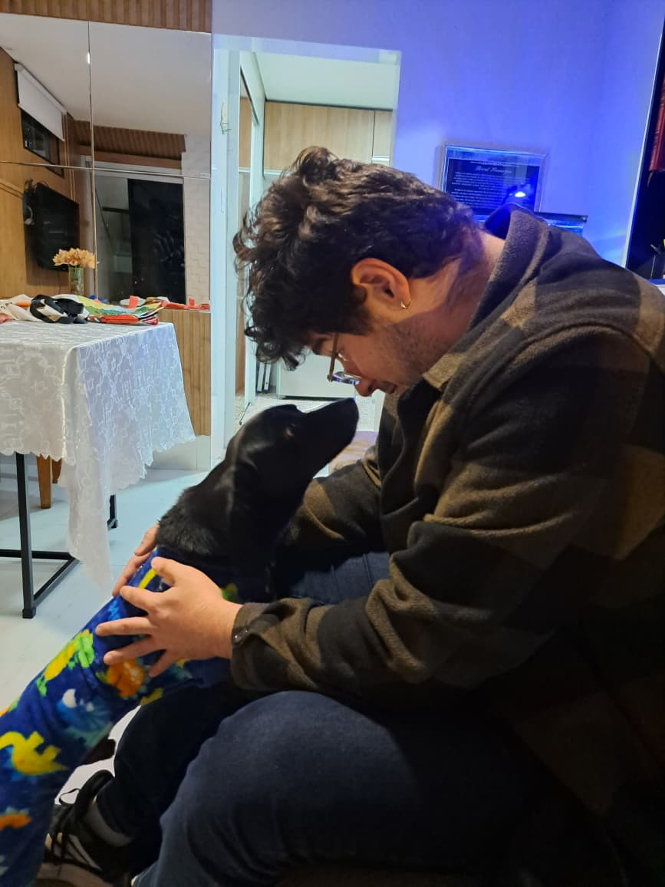

Um pouco da minha tragetória acadêmica:
Eu entrei na universidade no segundo semestre de 2023, sempre foi meu sonho fazer graduação mas por muito tempo estive confusa de qual caminho seguir. Depois de um tempo avaliando decidi que queria seguir na área da tecnologia. Ciência e matemática sempre foi algo que me chamou atenção então decidi dar uma chance e acabei me descobrindo na Engenharia. Durante a graduação sempre estive enrolada em projetos para aproveitar o máximo da universidade, com isso já fiz de tudo um pouco.
- Participei de empresa junior já no meu primeiro semestre (2023.2 - 2024.2) e fiquei por lá um pouco mais de um ano, aprendi sobre gestão de pessoas, automação de processos e um pouco sobre empreendedorismo.
- Fui monitora na matéria de Algoritmo e Estrutura de Dados I (2025.1) e foi uma experiência legal, além de fixar ainda mais os conceitos da matéria, pude ver o por trás do panos de como os professores organizam e avaliam atividades.
- Participei também do Grupo de Computação Competitiva (GCC) (2025.1), onde exercitei mais minhas habilidades em programação e até participei de competições e me divierti e aprendi bastante com elas.
- Fiz parte de um projeto de extensão chamado MathRunner (2025.1 - 2025.2), no qual o intuito era ensinar matemática para crainças e adolescentes por meio de jogos. Fizemos uma engine em python e os usuários podiam montar seus jogos e definir funçẽos para a velocidade e bordas do jogo, chegamos até a apresentar uma mini oficina para os adolescentes em uma escola SESI e no CEFET.
- Depois logo já comecei uma iniciação científica (2025.2 - 2026.2) com o título de "Otimização de Recursos no ESP32 para Instrumentação Inteligente: Estratégias Integradas de Aquisição A/D e Redes Neurais Embarcadas", desde sistemas digitais comecei a pensar mais sobre seguir carreira mais voltada para hardware e essa IC foi escolhida justamente por isso, pra tentar me aproximar um pouco mais desse mundo e ver se realmente é a minha praia e desde então tenho tido mais certeza de que quero trabalhar com isso. E é aí que entra o meu estágio.
Um pouco do meu estágio:
Alguns meses atrás recebi uma proposta pra participar do projeto seletivo da Cadence, uma empresa de software para EDA (Eletronic Design Automation), e fiquei muito feliz porque desde o inicio da minha caminhada pelo conhecimento da área de hardware a Cadence sempre foi um exemplo de empresa de tecnologia de ponta aqui em BH. Por causa disso acho que qualquer posição que eles me oferecessem lá eu aceitaria (eu não seria louca de recusar uma vaga pra meu *primeiro* estágio em uma empresa desse porte), porém a vaga era justamente para o time de Hardware deles, então caiu como uma luva! Apesar de eu não estar la pra projetar hardware ou algo do tipo, ainda sou extremamente grata (e feliz!) porque é uma ótima porta de entrada pro que eu quero. Atualmente eu desenvolvo Agente de IA para nosso produto, Job Scheduler, que é um software que gerencia os dois Hardwares de emulação que vendemos (Palladium e Protium), então tem um pouco a ver com o meu projeto de IC onde comecei meus estudos em Inteligência Artificial.
Um pouco do que eu amo:
Bom, acho que essa página ja tem uma boa visão sobre minha vida então aqui vou deixar como galeria de fotos das pessoas que amo e que me ajudaram a contruir minha história:






